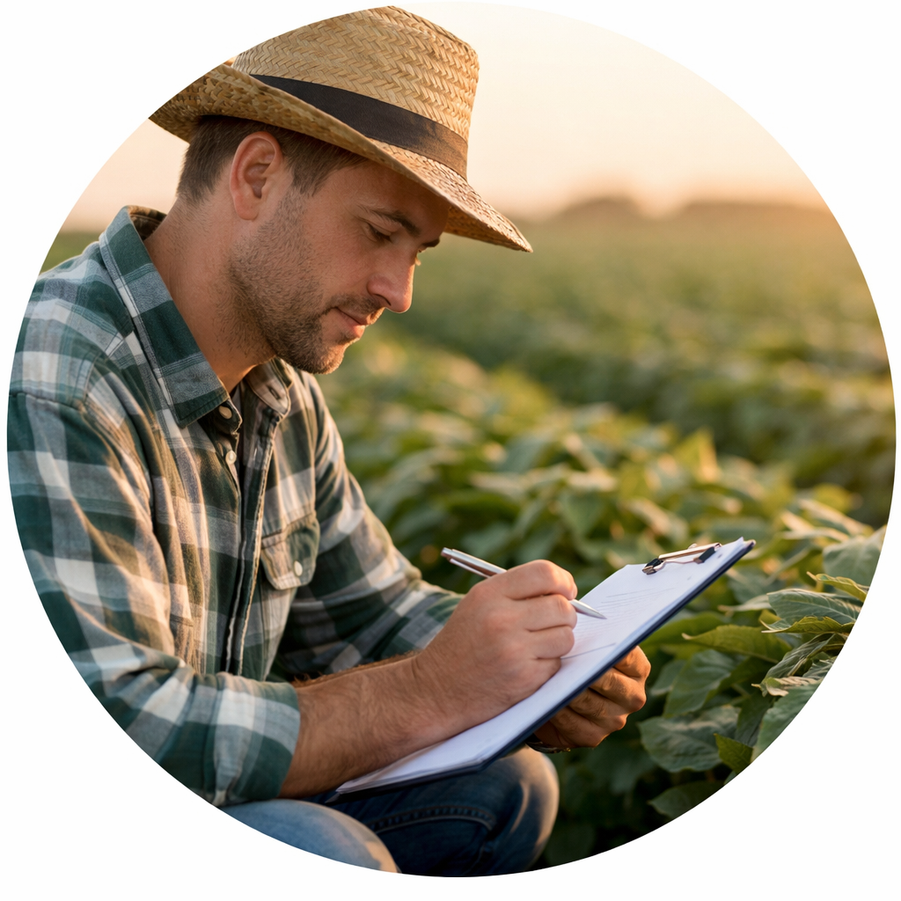
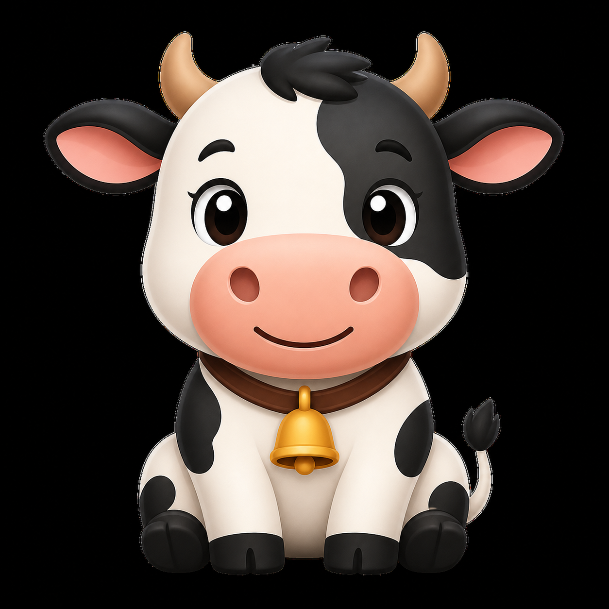

O ciclo de produção representa todas as etapas necessárias para transformar recursos em produtos finais, seja na agricultura ou na pecuária.

Planejamento

Produção

Colheita / Criação

Venda
Dica
Planeje com antecedência para evitar prejuízos e melhorar a produtividade.
Atenção
Erros no manejo podem comprometer toda a produção.
TIPOS DE AGRICULTURA
GESTÃO RURAL
